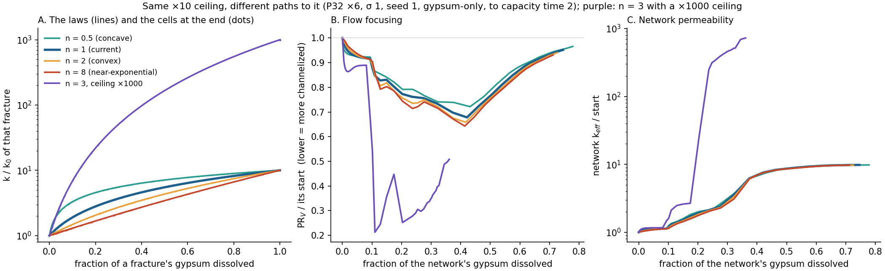

k–φ Shape Pilot (E0)
Question. Our channel depth follows the permeability ceiling, the most a fully dissolved fracture can gain (×10 with the current law). Does the path to that ceiling matter too?
Answer on this network. A little, and in a consistent direction. Four laws with the same ×10 ceiling give depths 0.72 / 0.68 / 0.66 / 0.64. The later in dissolution a law delivers its gain, the deeper the channel. Raising the ceiling to ×1000 moves depth from 0.68 to 0.21, about six times as much. So the ceiling is the main control and the shape is a smaller, systematic one. One network cannot settle it; E1 (9 networks) can.
What we ran
PFLOTRAN's law is k/k0 = [(φ − φc)/(0.1 − φc)]n. For each n we chose φc so that a fully dissolved fracture gains exactly ×10, as now:
- n = 0.5, concave: most of the gain comes early, ×7.1 by half dissolved.
- n = 1, current: ×5.5 by half dissolved.
- n = 2, convex: ×4.3.
- n = 8, near-exponential: most of the gain comes late, ×3.4.
The earlier n = 3 run (ceiling ×1000) is shown for scale. Everything else is as in Phase 1.
PFLOTRAN reproduces each law exactly: every fracture cell's permeability matches the formula to within 0.2 %.
Result 1: same ceiling, slightly different channel

| Law | Depth (min PRV/start) | Breakthrough (fraction dissolved) | Fewest fractures carrying 90 % of flow (vs start) | Network k gain | Gypsum dissolved by capacity time 2 |
|---|---|---|---|---|---|
| n = 0.5, concave | 0.72 | 0.48 | 0.53 | ×9.8 | 78 % |
| n = 1, current | 0.68 | 0.46 | 0.50 | ×9.8 | 75 % |
| n = 2, convex | 0.66 | 0.42 | 0.48 | ×9.7 | 73 % |
| n = 8, near-exponential | 0.64 | 0.41 | 0.47 | ×9.7 | 71 % |
| n = 3, ceiling ×1000 | 0.21 | 0.27 | 0.09 | ×727 | 36 % |
- The same in all four ×10 laws: the stage order; the channel forming in fractures that already carried the most flow (inheritance 1.0); the final network permeability gain (×9.7–9.8).
- Different, and in order: a late-gain law focuses flow a little more and breaks through a little earlier. Why: an early-gain law makes every partly dissolved fracture more permeable, which spreads the flow. A late-gain law keeps that gain for fractures that are almost fully dissolved, which are the channel.
- Against the rule we fixed beforehand: n = 0.5 and n = 8 differ from n = 1 by +0.044 and −0.035. That is outside the ±0.03 band for "the ceiling is enough" and below the 0.05 for "the path matters". It is in between, on one network.
Result 2: apertures before and after

- Open aperture splits in two for every ×10 law. About half the fractures open fully (7 µm → about 100 µm, the whole slab), and about a third are still untouched. The laws differ only in how many have opened by capacity time 2: 54 % (concave) down to 47 % (late-gain).
- Hydraulic aperture moves much less. Under any ×10 law a fracture's hydraulic aperture can grow at most ×2.15 (the cube root of 10). The median goes 75 → 106–122 µm and the top 5 % reach about 270 µm, nearly the same for all four laws.
- With n = 3 (×1000) the picture is different. Only 13 % of fractures open. Their hydraulic aperture jumps ×10 to about 1 mm (top 5 % at 0.93 mm), while three quarters of the network is untouched (median 82 µm). That is what a deep channel looks like.
What next
- E1 decides it. The same four shapes on the 9 Phase 2/3 networks at ceilings ×5.5, ×10 and ×30: 99 gypsum-only runs, about 70 min each on this machine.
- A cheaper first step: the ×10 shapes alone on the 9 networks, 27 runs, about one night alongside the 2 km queue.
- What we can say now: the ceiling dominates, the shape adds about ±0.04 in depth on this network, and nothing qualitative changes.